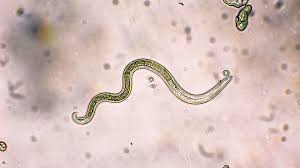
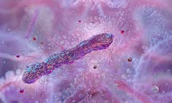

¿Qué son los Microorganismos?
Un microorganismo, o microbio, es un organismo de tamaño microscópico, que puede existir en su forma unicelular o como una colonia de células.
También denominados “microbios”, estos organismos cuentan con una organización biológica muy básica: una proporción importante de ellos cuenta con apenas una única célula. Además, se caracterizan por existir numerosas variedades, de diferentes formas y tamaños.
Tipos de Microorganismos
- VIRUS:
Son los microbios más básicos y solamente se los puede percibir con microscopios electrónicos. Son agentes infecciosos que, para replicarse, deben infectar a otros organismos unicelulares, a los que les inoculan su contenido genético (solo pueden reproducirse en una célula huésped). - HONGOS:
Muchos de los organismos que integran el Reino Fungi son microscópicos (por ejemplo, la levadura) - BACTERIAS:
Organismos unicelulares sin núcleo definido, con diversas formas (cocos, bacilos, espirilos) - PARÁSITOS:
Organismos que viven a expensas de otro organismo.
Galería de Microorganismos



Video sobre Microorganismos
Contacto
¿Tienes dudas o sugerencias? Escríbenos a: microorganismos.lu@ejemplo.com